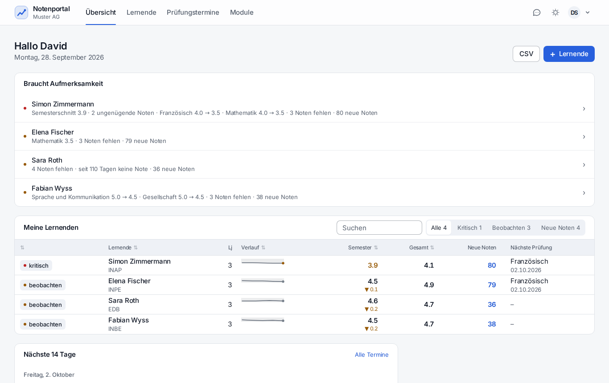
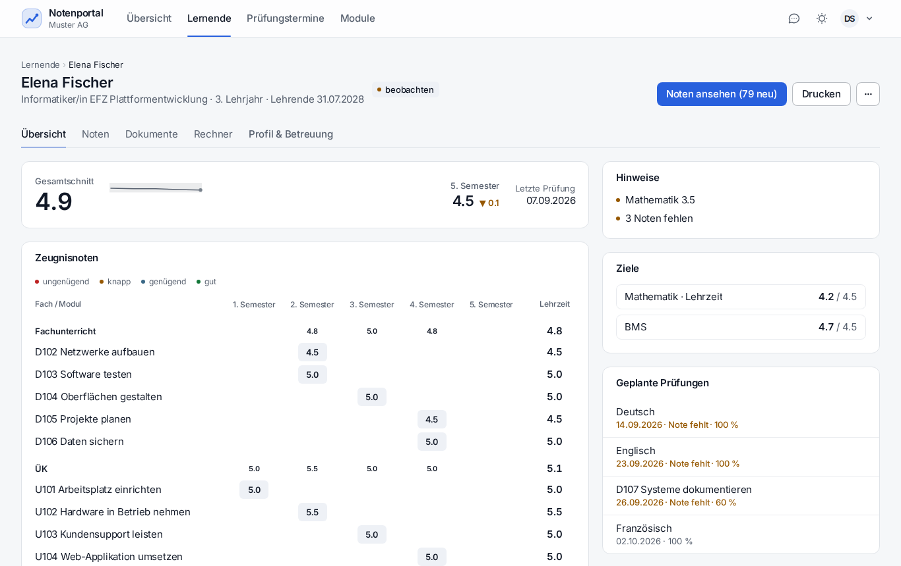
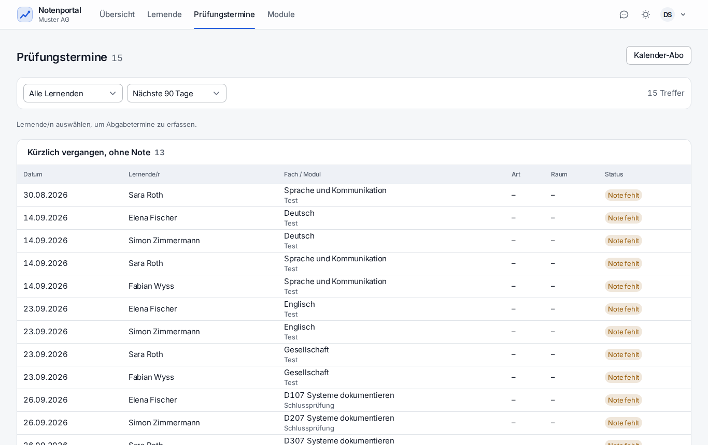
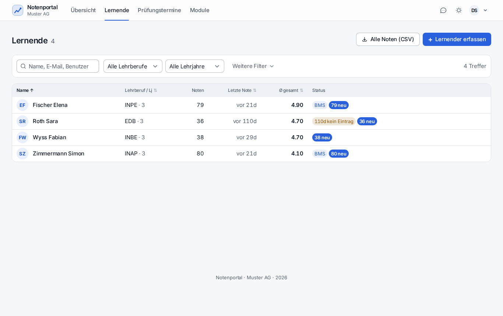

Menü: Übersicht · Lernende · Prüfungstermine · Module. Sichtbar ist, wer aktiv betreut wird.
Die Ampel auf der Übersicht

Oben «Braucht Aufmerksamkeit» mit Begründung, darunter alle Betreuten mit Verlauf, Semester- und Gesamtschnitt.
Status
Bedeutung
kritisch
Promotion gefährdet, Semesterschnitt zu tief oder mehrere ungenügende Zeugnisnoten
beobachten
Einbruch, Rückgang, fehlende Noten oder längere Inaktivität
ohne Markierung
im Rahmen
Die Gründe stehen als Text daneben – «Semesterschnitt 3.9 · 2 ungenügende Noten ·
Französisch 4.0 → 3.5 · 3 Noten fehlen». Damit ist das Gespräch vorbereitet, bevor man die Person
überhaupt geöffnet hat. Die Spalte «Neue Noten» zählt, was seit dem letzten Blick dazukam.
Cockpit einer Person

Alles zu einer Person auf einer Seite: Stand, Verlauf, Zeugnisraster, Ziele, Prüfungen.
Wege dorthin: Übersicht → Zeile anklicken, «Lernende» → Name, oder Ctrl + K und den Namen tippen.
Noten prüfen, korrigieren, kommentieren
Im Cockpit auf das Semester oder Fach klicken – die einzelnen Noten erscheinen.
Kommentieren: Kommentarfeld an der Note. Der Lernende sieht den Kommentar unter «Als Nächstes» und wird je nach Einstellung benachrichtigt.
Als gesehen markieren: nimmt die Note aus «Neue Noten».
Berufsbildner können Noten nicht anlegen und nicht löschen – das bleibt beim Lernenden bzw. beim Admin. Korrigieren und kommentieren ist möglich, damit Fehler nicht stehen bleiben.
Prüfungstermine

Kommende 7, 30 oder 90 Tage und vergangene ohne Note – nach Woche und Monat gruppiert, filterbar nach Person.
«Vergangen ohne Note» ist die nützlichste Ansicht: Dort steht, wo eine Prüfung war, aber nie eine
Note kam. Die Termine gibt es auch als persönliches Kalenderabo (Einstellungen → Kalender).
Lernende verwalten

Alle Betreuten mit Lehrjahr, Schnitt und nächster Prüfung; sortierbar, als CSV exportierbar.
Anlegen: «+ Lernende» – Name, E-Mail, Lehrberuf, Lehrbeginn. Das Portal erzeugt ein Startpasswort oder schickt einen Einladungslink (7 Tage gültig).
Betreuung: im Cockpit unter «Betreuung» mit Gültigkeitszeitraum. Endet sie, endet auch die Sicht auf die Daten.
Track: BMS- oder ABU-Abschnitt mit Start- und Endsemester eintragen – sonst fehlen die entsprechenden Fächer.
Bemerkung im Cockpit ist intern und für den Lernenden unsichtbar.
Dokumente und Notenblatt
Dokumente der Betreuten lassen sich einsehen, hochladen und löschen. Das Notenblatt
(Cockpit → «Notenblatt») ist die druckfertige Übersicht für ein Standortgespräch; daneben gibt es
den CSV-Export.
Benachrichtigungen einstellen
Einstellungen → Benachrichtigungen: je Anlass sofort, in der Tageszusammenfassung um 18:00 oder
nie. Sinnvolle Grundeinstellung für Berufsbildner: Tageszusammenfassung für neue Noten und
Korrekturen, sofort für kritische Fälle und fehlende Noten nach einer Prüfung.